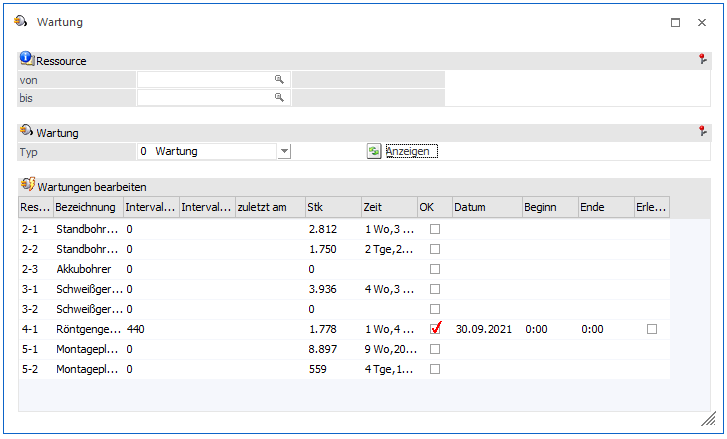
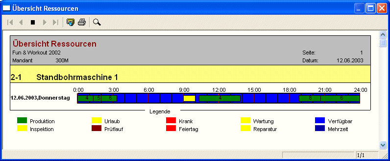

Im Programmbereich
1 WinLine PPS
1 Produktion
1 Wartung
zeigt das Programm, welche Ressourcen zur Wartung anstehen. Außerdem kann der Bearbeiter die Ressourcen aus der Verfügbarkeit nehmen, indem er die vom Programm vorgeschlagene Wartung bestätigt und er kann Ressourcen wieder verfügbar machen, indem er das Ende Wartung vermerkt.

Ø Auswahl Ressource von / bis
Eingabe des Ressourcenbereiches dessen Wartungen bearbeitet werden sollen.
Ø Wartung/Inspektion/Prüflauf
Auswahl, welche Art von Wartung vorgenommen werden. Es stehen drei Typen zur Verfügung, für welche unterschiedliche Intervalle definiert werden können. Details siehe Kapitel.
Ø Anzeigen-Taste
Die Ressourcen, auf welche die o.a. Definition zutrifft, werden angezeigt.
Ø Res.
Informationsfeld, das die Ressourcennummer zeigt.
Ø Ressource
Informationsfeld, das die Bezeichnung zeigt.
Ø Intervall Stk.
Informationsfeld das zeigt, nach wie vielen produzierten Stück ein Wartung grundsätzlich vorgesehen ist.
Ø Intervall Zeit
Informationsfeld das zeigt, nach welcher Zeitspanne ein Wartung grundsätzlich vorgesehen ist.
Ø Zuletzt am
Informationsfeld das zeigt, wann zuletzt gewartet wurde.
Ø Stk
Informationsfeld, das zeigt, wie viele Stück seit der letzten Wartung bereites produziert wurden.
Ø Zeit
Informationsfeld, das zeigt, wie lange seit der letzten Wartung bereites produziert wurden.
Ø OK
Die Aktivierung dieser Checkbox zeigt an, dass diese Ressource nun gewartet werden soll
Ø Datum
Eingabe des Datums an dem die Wartung durchgeführt werden soll.
Ø Beginn/Ende
Eingabe des Zeitraumes innerhalb dessen die Wartung durchgeführt werden soll.
Ø Erledigt
Die Aktivierung dieser Checkbox zeigt an, dass die Wartung erfolgreich durchgeführt wurde. Die Felder Stück und Zeit werden initialisiert und die Protokollierung beginnt von neuem.
Ø Kalender-Taste
Zeigt die Kalendereinträge der Ressource, die gerade aktiv ist.
Ø Ok
Die Eingaben werden gespeichert. Im Kalender werden für die bearbeiteten Ressourcen Reservierungen vorgenommen. Das bedeutet, dass die Ressourcen zu diesen Zeitpunkten nicht zur Verfügung stehen.

Ø Ende
Der Programmbereich wird verlassen.